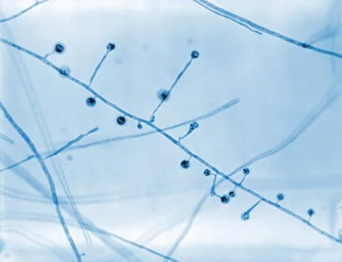

真菌 · 真菌界
皮炎芽生菌 Blastomyces dermatitidis

双相型真菌，菌落白色至褐色，吸入潮湿土壤中的孢子可致肺与皮肤病变，免疫低下者感染风险更高。
- 分类
- 门子囊菌门纲散囊菌纲目散囊菌目科阿耶罗菌科属芽生菌属
- 栖息环境
- 潮湿酸性土壤、腐木与河岸，温暖季节活动后易暴露
- 地理分布
- 北美中部与东南部为主，非洲、印度与中国有散发病例
- 保护级别
- 暂无评估；作为环境病原存在
物种志
皮炎芽生菌为双相型真菌：室温下呈菌丝相，菌落白色至淡褐、绒毛状至粉末状，镜下为细长有隔菌丝与小分生孢子；人体温度下转为酵母相，细胞圆形、壁厚，以宽基底出芽，这是重要的镜检特征。
皮炎芽生菌存在于潮湿的酸性土壤、腐木与河岸，主要流行于北美中部与东南部，中国报道较少。该菌在土壤中可长期存活。人吸入孢子后可引起肺部感染，表现为咳嗽、发热、胸痛，部分患者出现皮肤溃疡或骨病变；免疫低下者可播散。它不人传人。防治以避免在疫区翻动潮湿土壤、减少粉尘吸入为主；诊断需培养或抗原检测，治疗用伊曲康唑或两性霉素 B，疗程较长，不可自行停药。
形态与习性
- 菌落菌丝相白色至淡褐，绒毛至粉末状
- 双相性体内为厚壁圆形酵母，宽基底出芽
- 来源潮湿酸性土壤、腐木与河岸
- 感染途径吸入孢子，不人传人
- 临床表现肺炎、皮肤溃疡，偶累及骨骼
- 防治避免翻动潮湿土壤，规范抗真菌治疗
趣味知识
- 皮炎芽生菌的酵母细胞以“宽基底出芽”，像一个底座很宽的小葫芦，是镜检关键。
- 它主要流行于北美，常与在河岸、林地翻动潮湿土壤的活动有关。
- 感染可同时累及肺与皮肤，皮肤溃疡边缘隆起，容易被误诊。
- 治疗疗程长，症状缓解后也不可自行停药，否则容易复发。